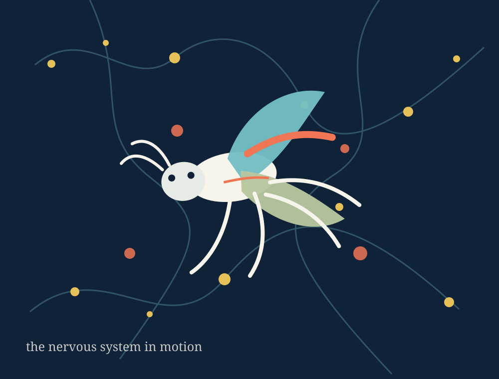
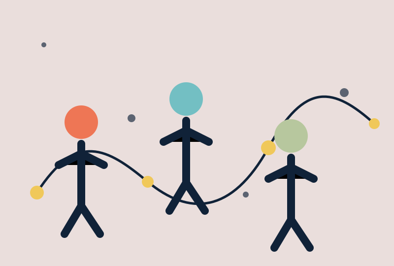
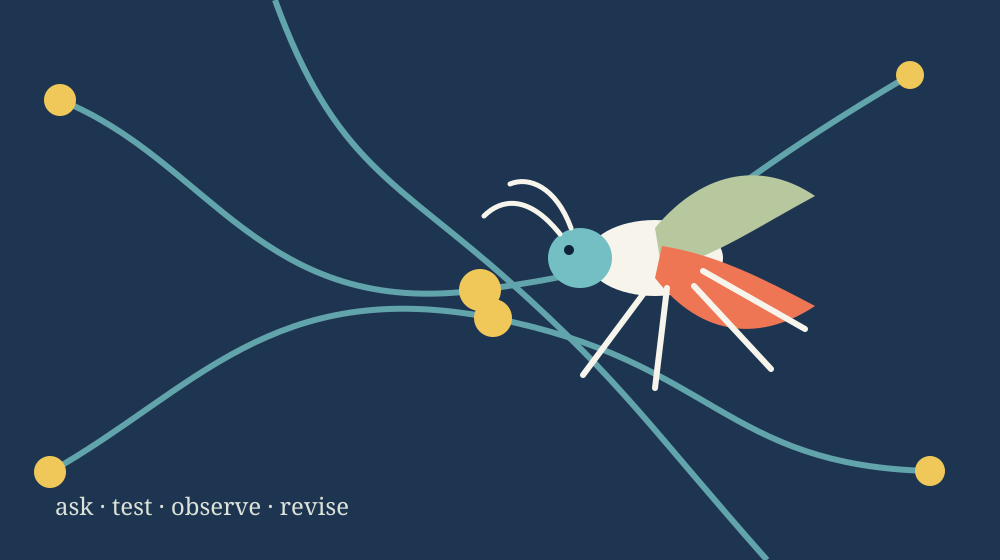

Which neurons start a movement?
We follow descending neurons, the cells that carry signals from the brain down to the motor circuits, and ask how they trigger and switch behaviors like forward and backward crawling.
Fruit-fly neuroscience · Bucknell University
We use fruit flies to work out how the brain drives movement. Undergraduates run the experiments with us, often starting in their first year.

What we study
A fly larva can crawl forward, then throw itself into reverse. An adult fly can correct its course in the middle of a turn. We want to know how a nervous system produces behaviors like these: how the right neurons fire in the right order to move a body. Flies let us follow that from single, named neurons up to the whole behaving animal.

01
How neural circuits get built and drive movement.
See the research
02
Students run real experiments, starting in their first year.
How students work
03
Hands-on neuroscience with communities in New Mexico, and images from the lab.
See the workOpen questions
We follow descending neurons, the cells that carry signals from the brain down to the motor circuits, and ask how they trigger and switch behaviors like forward and backward crawling.
The wiring for movement is laid down during development, before the animal ever uses it. We track how neurons take on their identities and find the right partners.
A fly's nervous system is small enough to map neuron by neuron, but it still solves the same problem ours does: turning brain activity into coordinated movement.

In the lab
In the course-based lab and in the research group, students design their own experiments, wrestle with messy data, and present what they find. Some of it works and some of it doesn't. That's the point: the answers aren't in the back of the book.
How students workRecently
Current work following where descending neurons come from and how they shape crawling in larvae.
Research overviewIn BIOL 202, students use optogenetics to test what descending neurons actually do.
Students + teachingHands-on neuroscience workshops run with Indigenous students and educators in New Mexico.
Outreach + creative work